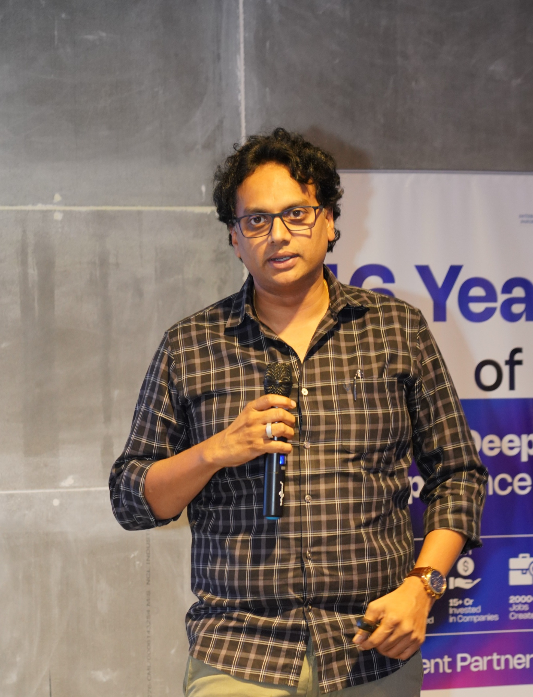
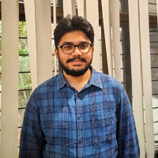
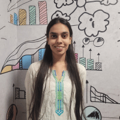
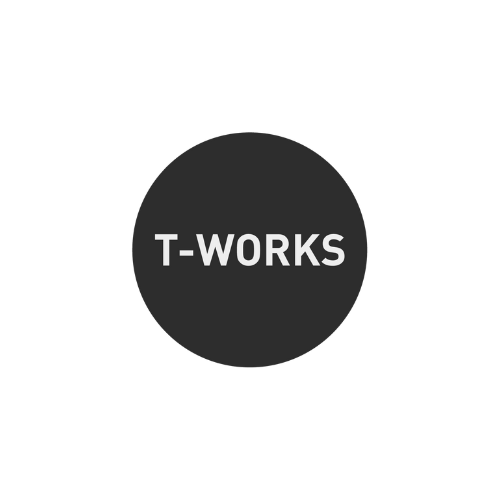
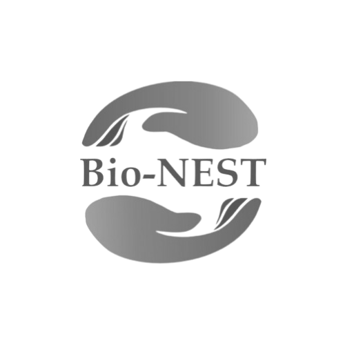

Innovation and commitment to transforming healthcare
Revolutionizing healthcare with remote patient monitoring.
DeepFacts Private Limited, based in Hyderabad, is a trailblazer in digital health innovation, founded in 2020. It introduced the world's premier Bluetooth-connected multi-parameter monitoring device compatible with mobile devices. This groundbreaking technology paved the way for proRITHM, a product dedicated to enhancing lives through improved health outcomes.
Over three years, DeepFacts diligently developed proRITHM, integrating its CDSCO-approved medical device with a remote patient monitoring platform. This fusion birthed the Unified Care model, a digital health ecosystem empowering healthcare providers to remotely manage chronic diseases with efficiency and precision.
Our Values
Innovation
Pursuing meaningful innovation that benefits both our organization and the global community.
Excellence
Commitment to ensuring every customer's satisfaction.
Trust
Fostering trust and upholding personal responsibility in all our interactions and partnerships.
Our Vision
Pioneering the integration of technological expertise to transform the healthcare landscape, facilitating rapid detection and timely intervention to promote global health and wellness.
Our Mission
To build a nurturing environment which helps reduce the geographical difference between patients and doctors with the help of a proactive and predictive diagnostic system.
Founder's Message
Empowering healthcare through innovation.
Welcome to DeepFacts, where we revolutionise healthcare by bridging the gap between patients and providers through cutting-edge technology. As the founder of this innovative platform, I am passionate about transforming the way healthcare is delivered. Our smart remote patient monitoring platform is designed to provide real-time, accurate data, enabling proactive care and personalised treatment plans.
In today's fast-paced world, access to timely and precise medical information is crucial. Our platform integrates seamlessly with advanced medical devices, offering a comprehensive solution for continuous patient monitoring. This not only enhances patient outcomes but also reduces the burden on healthcare providers by enabling remote management and early intervention.
At DeepFacts, we believe in the power of technology to save lives. Our mission is to empower healthcare professionals with the tools they need to make informed decisions and to provide patients with the peace of mind that comes from knowing they are always connected to their care team.
Join us in our journey to redefine healthcare, making it more efficient, accessible, and patient-centric. Together, we can create a healthier future.

Our Management Team
Leadership with voice of experience.
Mr. Sesha M Rao
Strategic Head
Dr. AVS Suresh
Investor & Medical Mentor
Our Medical Advisors
Dr. Pankaj Jariwala
MBBS | MD – Anaesthesiology | FNB – Critical Care
Dr. M.S.S. Mukharjee
MBBS | MD – General Medicine | DM – Cardiology
Our Technical Team
Mr. Dinesh Babu K
Embedded Engineer

Mr. Durga Vikas B
Software Developer
Mr. Teja Talluri
Embedded Engineer

Miss Yashasvini Amidyala
Backend Developer
Miss Srujana Durga
Business Analyst
Mr. Veerendra Gandla
Backend Developer
Achievements and Awards
Celebrating our remarkable milestones.


Client's Testimonials

“It is a great piece of equipment, useful for the doctors and patients. Congratulations!!”

“A very useful model of remote monitoring and post-operative care.”

“Very useful for Urban and Rural area.”

“Very useful medical device. As early as possible device should be launched and used in Medical institutes.”
“It is a great piece of equipment, useful for the doctors and patients. Congratulations!!”
“A very useful model of remote monitoring and post-operative care.”
“Very useful for Urban and Rural area.”
“Very useful medical device. As early as possible device should be launched and used in Medical institutes.”